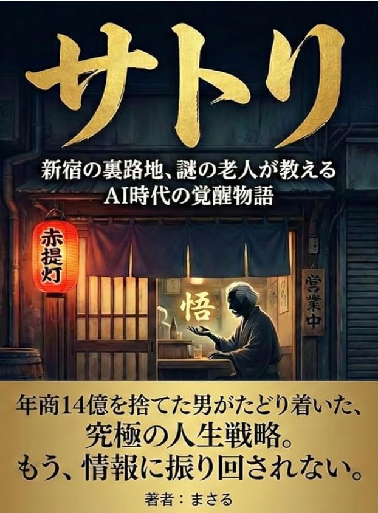
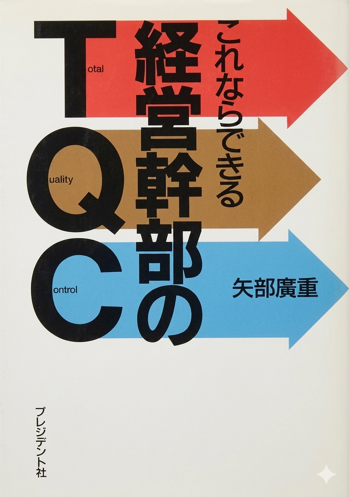

継承者・矢部大と、創業者・矢部廣重。二代にわたる著書が、感動と経営の原理を伝えます。気になる一冊から、ぜひ手に取ってみてください。



※ 「サトリ」はAmazon Kindleで直接購入できます。その他はAmazon検索リンクです。正式URLが分かり次第、直接リンクに差し替えます。
月刊『致知』にも取り上げられた、感動セールスの原点。プレジデント社・マネジメント社より刊行。




人間学誌『月刊致知』（致知出版社）に、矢部廣重が数年にわたり連載。「眼力には五眼がある——肉眼・慧眼・法眼・天眼・仏眼」。経営者が磨くべき”6つの眼”を実話形式で説いた代表シリーズです。
先見眼・慧眼・戦略眼・本物眼・洞察眼・眼力 全6巻
「時間がない」を終わらせる一冊。時間を創造する経営哲学の原典。タイムマネジメントセミナーの土台になっています。
値引きや押し売りに頼らず売る。感動セールスの実践書。営業戦略・感動セミナーの土台です。
「できない」を「できる」に変える発想術。常識の逆を行く矢部流ビジネスの原点。
テクニックより人間関係。信頼で選ばれ続けるための、人としてのあり方を説く一冊。